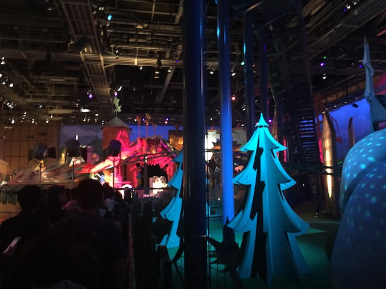

| |
Snoopy's Great Race Review

We're here at Universal Studios Japan where's we'll be revewing their kiddy coaster. The one that isn't insanely popular because of Harry Potter. Snoopy's Great Race. So yeah. This one instead is themed to the Peanuts characters. And I have to admit. This is unquestionably one of the better kiddy coasters. Not only because it's pretty well themed for a kiddy coaster, but also the coaster itself is surprisingly good. OK. Not great, but it's surprisingly got a decent amount of speed and laterals for a kiddy coaster. So let's hop in the cars, and off we go! We roll around a turn, climb up the lifthill. We head down a small curved drop, get a nice view of Charlie Brown on a mountain, and with the projection of snowflakes on the wall. Go over a small hill, CRASH right through the wall. Go around a curve that surprisingly has some laterals. Go into a small helix. And hey, look who's in the center. It's Snoopy, and he's filming us go through the helix. Looks like Snoopy wants some good shots too. Actually, this is the on-ride photo. Very clever way of putting that there Universal Studios Japan. Go through what is supposed to be a brake run, but we don't slow down. Wave hello to Peppermint Patty, go through a turn, and into the brake run. I know it's weird to say this, but this ride actually reminds me of Patriot @ Castles 'N' Coasters, only with MUCH better theming. I'm not sure why this is more agressive than most kiddy coasters. Maybe the fact that it was made by a Japanese manufacter and they don't give a crap. Anyways, fun ride. But still a kiddy coaster and only worth riding if you're a credit whore.
4/10
Location: Universal Studios Japan
Opened: 2001
Built by: Senyo Kogyo
Last Ridden: October 29, 2018
Snoopy's Great Race Photos

Home
|